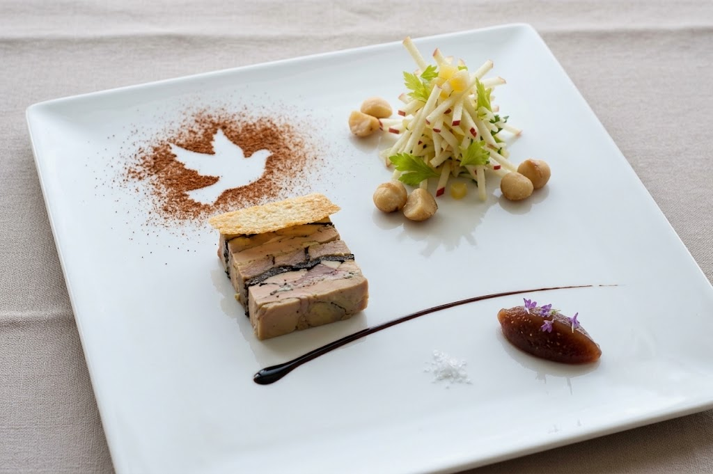
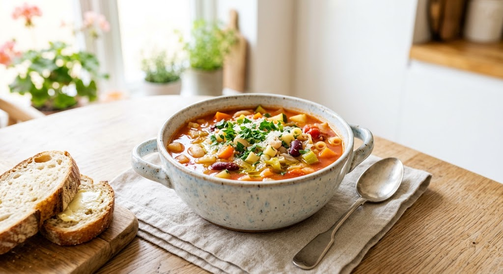
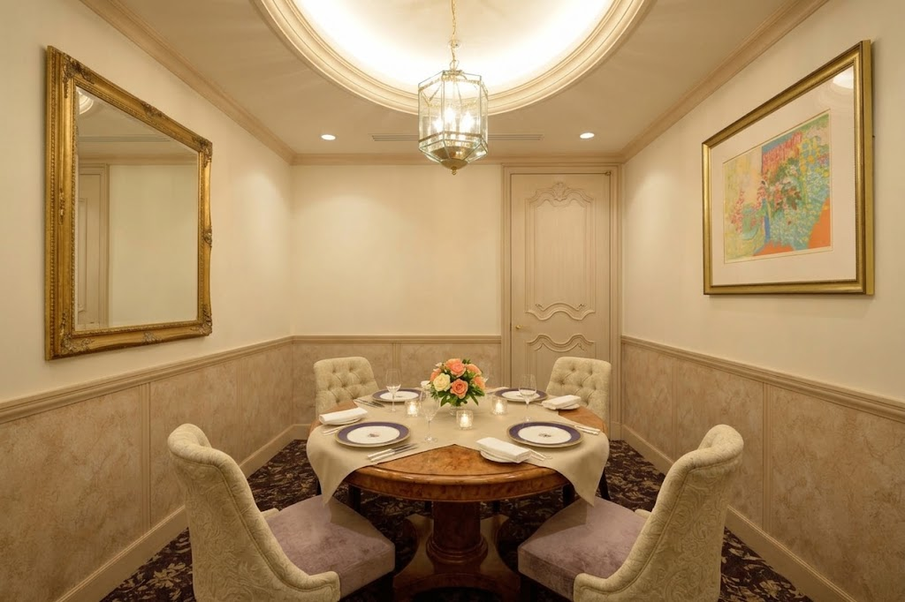
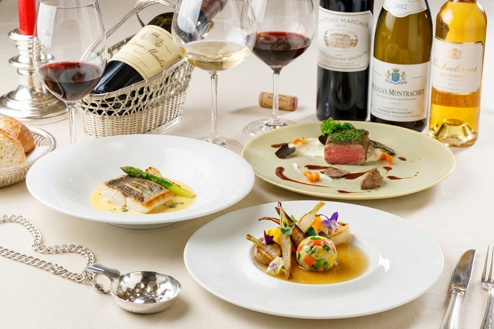

シェフが地元岩手をはじめ日本各地から旬の素材を厳選。その良さを最大限に引き出したコース料理を、ソムリエによるワインペアリングとともにお届けします。
地元岩手をはじめ日本各地の旬の素材を使用。季節ごとに産地直送食材を使った特別ディナーもご用意しています。
フランス研修を経て、2023年「フランス レストランウィーク フォーカスシェフ」に選出。本場のエッセンスとオリジナル性が融合します。
ベージュを基調としたシックで落ち着いた店内で、記念日や会食、少人数の特別な時間をゆったりとお過ごしいただけます。

当店イチオシの一品です。岩手の雑穀を使ったパンなど、地元の恵みを感じるお料理とあわせてお楽しみください。季節ごとの特別ディナーや、フランスの家庭料理を気軽に楽しめる一夜限定イベントなども企画しています。
ベージュを基調としたシックな店内は、フォーマルにもカジュアルにも対応。2室の個室を備え、会合やご家族でのお食事にも。店内はバリアフリー設計で、おひとりでのご利用も安心です。


料理長はフランス研修を経て、本場の感性を磨いてきました。旬の素材の持ち味を活かし、季節ごとに表情を変えるコースをご用意しています。ペアリングの最初の1杯はシャンパンも選べます。
ペアリングの最初の1杯はシャンパンも選択出来ます。ソムリエさんと相談し、白ワインを中心にペアリングして頂きました。岩手の雑穀使用のパンも美味しかったです。ホテル内のフレンチなので接客は流石に良く、おひとり様でも安心です。個室がありますので、会合等にも良いお店かと思います。
結婚記念日に利用させていただきました。店内の雰囲気もさることながら、運ばれてくる料理の美味しさ、説明の上手さ、また、慣れてないこちらにも優しい柔和な対応をして頂き大変満足でした。また利用させていただきます。
※ お客様の口コミより一部を抜粋しています。
| 店名 | フランス料理 モン・フレーブ |
|---|---|
| 所在地 | 〒020-0033 岩手県盛岡市盛岡駅前北通2-27 ホテルメトロポリタン盛岡 NEW WING 2階 |
| アクセス | 盛岡駅から徒歩約3分 |
| 定休日 | 年中無休 |
| 電話番号 | 019-625-6262 |
| 設備 | 個室2室／バリアフリー対応 |
| 公式ページ | ホテルメトロポリタン盛岡 レストランページ |